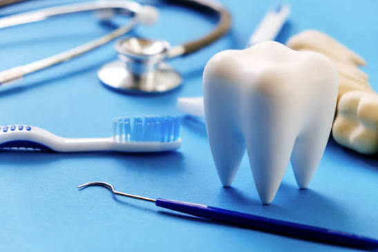

This project is an AI-powered dental diagnosis system that enhances low-quality dental X-ray images using Super Resolution and detects dental anomalies using a Siamese Contrastive Loss model. It helps improve diagnostic accuracy and supports early detection of dental diseases.
To improve the quality of dental X-ray images and accurately detect dental anomalies using Artificial Intelligence techniques, assisting dentists in making faster and more reliable diagnoses.
Poor-quality dental X-ray images can make diagnosis difficult. Manual examination is time-consuming and may lead to inaccurate results. This project enhances image quality and automates anomaly detection.
Upload Dental X-ray Image
Image Enhancement using Super Resolution
Feature Extraction
Detection using Siamese Contrastive Loss Model
Display Detection Result
The system successfully enhanced dental X-ray images and detected dental anomalies with improved accuracy. It supports early diagnosis and reduces the chances of manual errors.